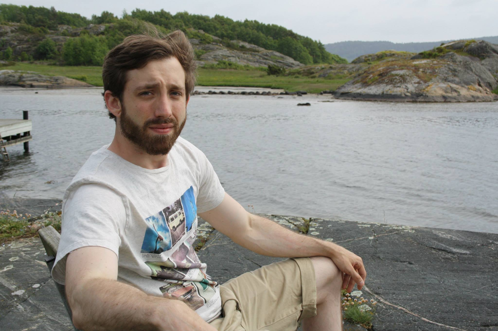

About Me

My Background
I am 28 years old and I am originally from Columbus, Ohio. In the U.S. I earned my Bachelor's in Criminal Justice and my Master's in Criminology. During my education, I worked various jobs relating to my field including a year as a private police officer. In 2013, my life quickly changed after I became engaged to my wife, Mirjam, who is from Sweden. I moved to Gothenburg shortly after we were engaged and I have been living here since.
Change in Career
Finding work in Criminology has not been easy in Sweden, so I have decided to switch career paths. Computers, networking, and to a certain extent programming have always been passions of mine, but I did not pursue a career in that field due to job uncertainty in the U.S. at the time. Now that I am able to receive free education in Sweden, I plan to make the most of it by reeducating myself for a career as a full stack developer.
What I Could Teach Others
I am most knowledgeable about sociological and criminological topics, so if anyone is interested about that sort of thing feel free to ask! In terms of programming I have experience mostly with C# and Python. I also have intermediate knowledge about Linux.